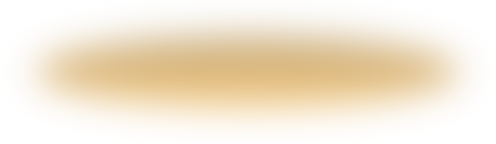
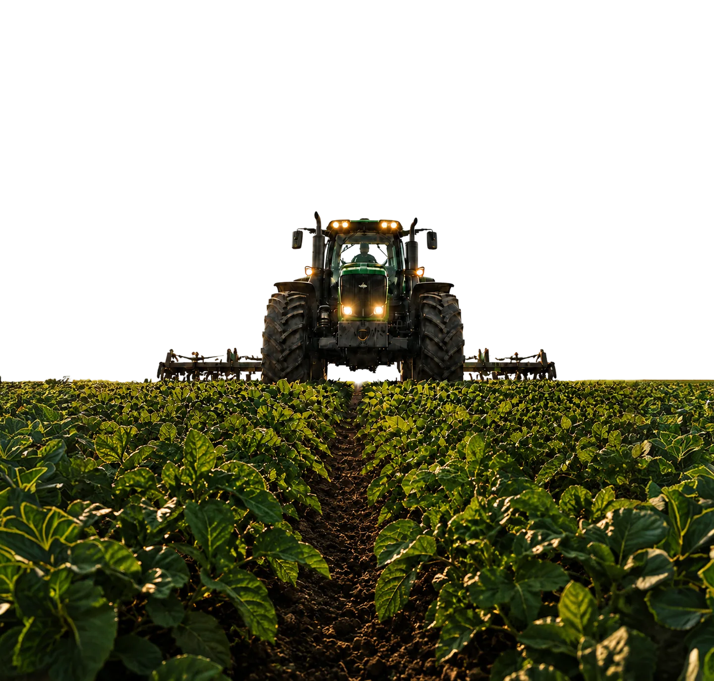
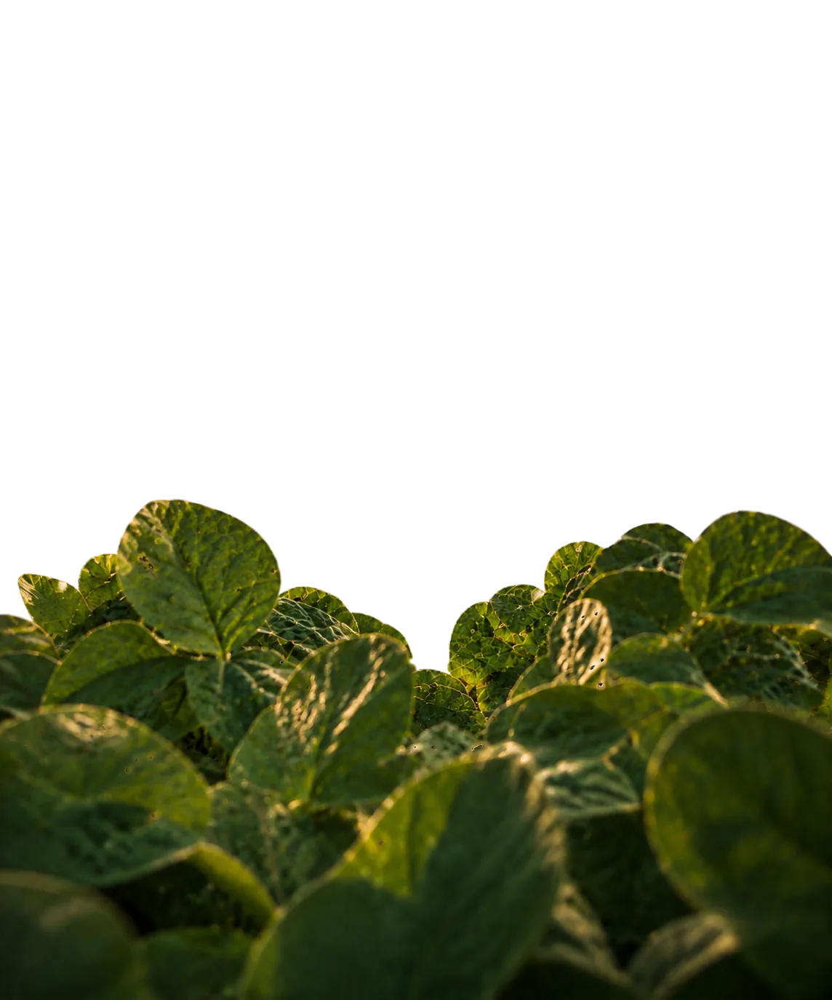
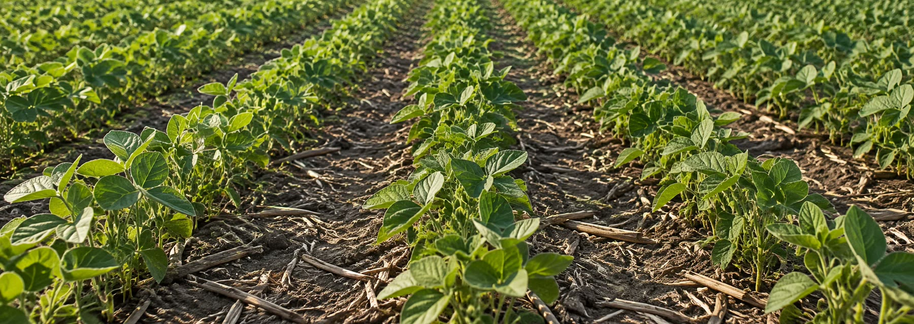
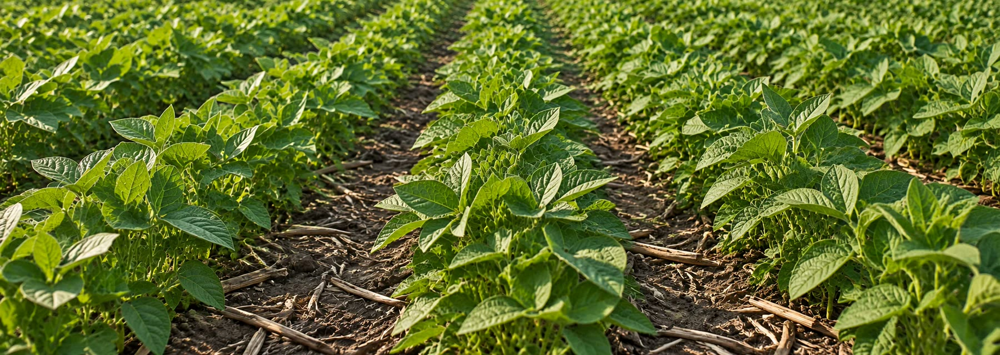
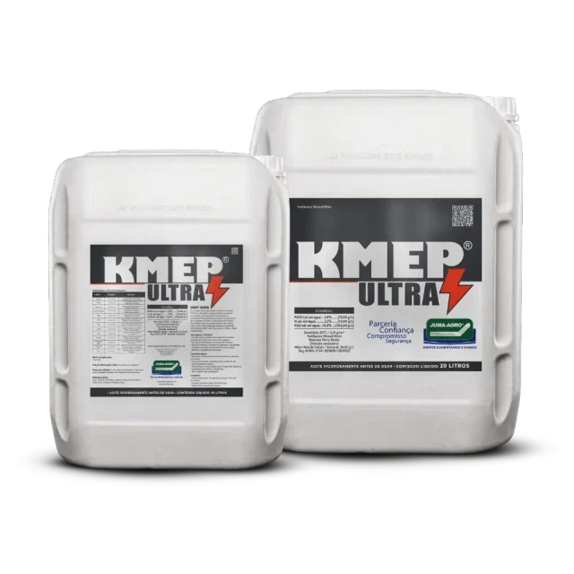
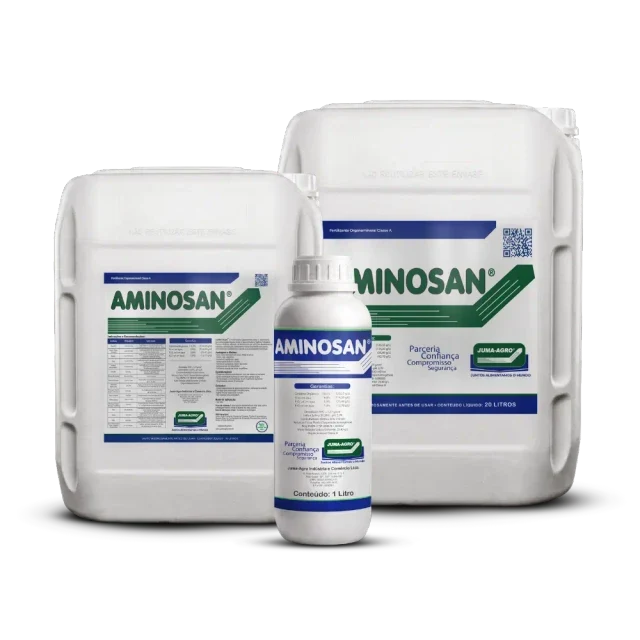
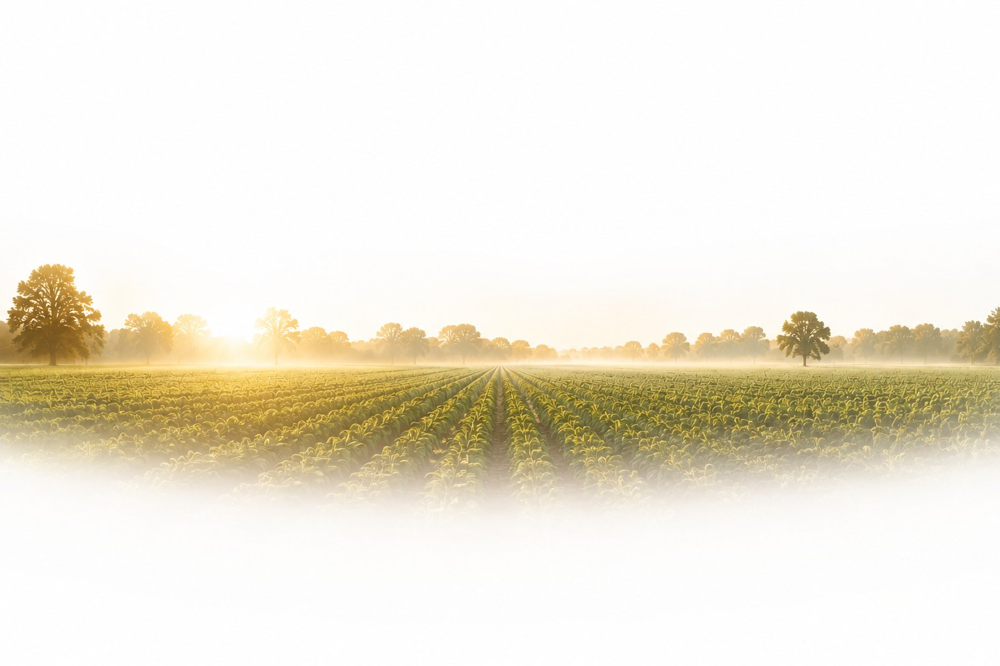
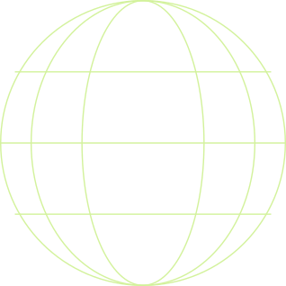

1988
The product came first
Julio Matino formulated Aminosan before there was a company to sell it. Growers in Sao Paulo bought it because it worked, and the demand built the business.



Juma-Agro Fertilizer LLC · Lakeland, Florida
In Brazil, the farmer harvests two to three crops from the same plot each year. There is no winter to reset the field. Our foliar nutrition has been tested in this for 38 years, trial after trial, with the witness alongside.
1988
Julio Matino formulated Aminosan before there was a company to sell it. Growers in Sao Paulo bought it because it worked, and the demand built the business.
12
Months of pressure a yearNo winter to reset the field. Heat stress as routine, and a dry spell that lands in the middle of grain fill.
40
Years on tropical agricultureAn asset no U.S. biostimulant company has. We’re not asking you to overlook where this came from. We’re asking you to look at it.
Nearly four decades of foliar nutrition built in the hardest growing conditions in commercial agriculture — two and three crops a year, heat as routine, no winter to reset the field. That expertise now crosses to your acres: more efficiency out of every pass you already make, more yield out of the stand you already have, and a bigger margin at the end of the season.


Untreated check TreatedMore work per pass.
Visible gains in weeks.
More yield, better margin.
A company with thirteen products bringing two to the U.S. is making a choice. Here is what each one is for.
Insecticide partner · Foliar potassium
It goes in the tank with your insecticide and drives the target out of hiding, so the spray you already paid for actually reaches it.

Free amind acids
The building blocks, delivered ready to use. In the field for 40 years.

Explore the crops we support across different growing conditions. Hover a card to bring it forward and see the crop in focus.
A major source of sugar and renewable products.
Cultivated in tropical regions around the world.
Versatile, resistant, and essential to feeding the world.
Cultivated in tropical regions around the world.
A major source of sugar and renewable products.

A product is the end of a process. These are the three programs that run all year and produce: it research, open doors, and a team that meets face to face.
Research · Since 2021
Application technology research with UENP and with NITEC, the application technology and agricultural machinery lab at UNESP — wind tunnel work on droplet spectrum, drift and deposition. Application technology is a research program here, not a tagline.
Naming the institutions depends on authorization · [P19]
Open doors · One-day immersion
Growers, dealers and partners spend a day inside the operation: the company’s history, the production floor, the in-house quality lab, logistics — and a conversation with the founder, who tells how he formulated Aminosan almost forty years ago. Anyone who wants to check what we say can come and look.
Those who live it, understand it.
Those who understand it, produce more.

The team · Four days, once a year
A four-day convention that brings the Juma team together from every region of Brazil — agronomists, sales and technical staff in the same room, going over what worked in the field, what didn’t, and what the next season asks for. The agronomy that reaches the U.S. was argued out there first.
Start year and number of editions · [P32]
Pick a field. Leave an untreated check strip beside it. We bring the product and come back at harvest with you. Your result, on your acres, against your own check.
One field, one pass, the crop you already planned. Nothing changes in your program.
An untreated strip beside it. That is the whole method — the same one used on every number on this site.
Yield monitor data, side by side. The number is yours either way — because you ran the trial
Pick a field. Leave an untreated check strip beside it. We bring the product and come back at harvest with you. Your result, on your acres, against your own check.